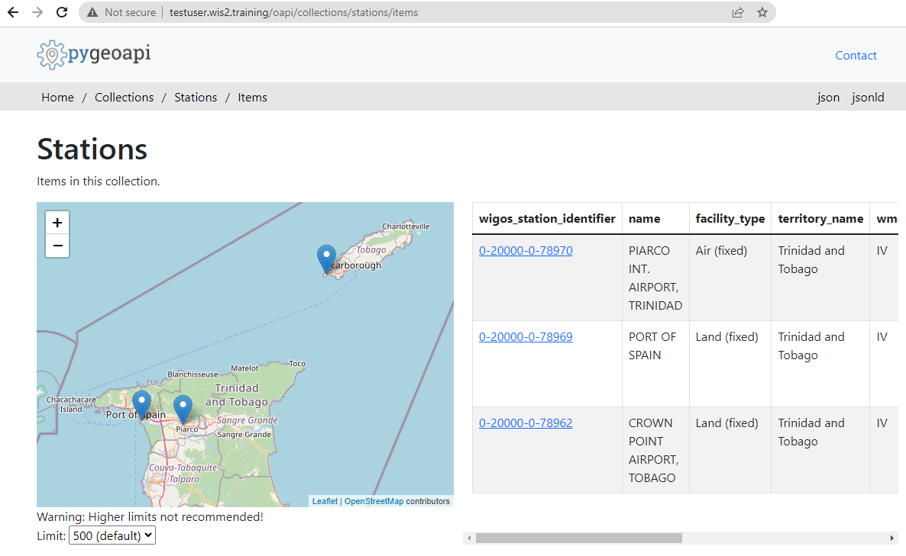

Configuring station metadata
Introduction
wis2box uses a fixed station metadata list that is used as part of its runtime operation. Only data for stations configured in the wis2box station list will be published on your wis2box broker. The WIGOS Station Identifier (WSI) is used as the unique reference of the station which produced a specific set of observation data.
Preparation
Login to your student VM using SSH.
Ensure wis2box is running:
cd ~/wis2box-1.0b4
python3 wis2box-ctl.py start
python3 wis2box-ctl.py status
Update the wis2box station list
Pre-select a few stations in your country that you would consider for data publishing on WIS2. If you want to ingest your own data sample later during the WIS2 training, make sure to add the stations corresponding to your data.
Edit the file ~/wis2box-data/metadata/station/station_list.csv:
For each new station, add a row to the end of the file with the following values:
station_name: the human readable name of the stationwigos_station_identifier: the WSI issued for the stationtraditional_station_identifier: the traditional station identifier if a WSI does not existfacility_type: the station/platform type (use Land (fixed) for land stations)latitude: the latitude, in decimal degreeslongitude: the longitude, in decimal degreeselevation: station elevation, in metres above sea levelterritory_name: the human readable country namewmo_region: the Roman numeral of your country based on WMO Regional Associations
Tip
Ensure that latitude and longitude values are correctly signed (for example, use the minus sign [-] for southern or western hemispheres.
Using data from OSCAR
It is recommended to use station information from the WMO OSCAR/Surface system where available.
The script ~/exercise-materials/create-station-list/oscar2wis2box.py can be used to add stations to your station list if they are available in OSCAR/Surface.
For example to add the stations with WIGOS-IDs=0-20000-0-78970, 0-20000-0-78969 and 0-20000-0-78962 to your station_list.csv, run the following commands:
python3 ~/exercise-materials/station-list/oscar2wis2box.py 0-20000-0-78970 >> ~/wis2box-data/metadata/station/station_list.csv
python3 ~/exercise-materials/station-list/oscar2wis2box.py 0-20000-0-78969 >> ~/wis2box-data/metadata/station/station_list.csv
python3 ~/exercise-materials/station-list/oscar2wis2box.py 0-20000-0-78962 >> ~/wis2box-data/metadata/station/station_list.csv
Review your station list
Check the content of your station list from the command line as follows:
cat ~/wis2box-data/metadata/station/station_list.csv
Or open the file in WinSCP.
Keep adding lines to station_list.csv and ensure you have at least three stations defined.
Publishing station metadata
Login in to the wis2box-management container:
cd ~/wis2box-1.0b4/
python3 wis2box-ctl.py login
Run the following command to publish your station metadata:
wis2box metadata station publish-collection
Ensure that your new station metadata was published to the API, by navigating to http://<your-host>.wis2.training/oapi/collections/stations/items:

Click on your station metadata record and inspect the content, noting how it relates to the content of the station_list.csv you have updated.
Conclusion
Congratulations!
In this practical session, you learned how to:
- update station metadata
- publish station metadata